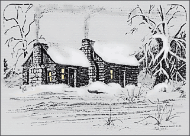
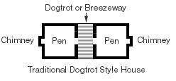
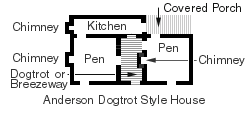

|
My cousin Myra Elizabeth “Lib” Chastain
and I first saw this old house while searching the back roads of south-west
Warren County Tennessee. On Andy McGowan road (a dead end road)
we saw an old house with some pioneer
stone work in an old chimney. This house, located on the farm of E.L.
Maynard, has now been removed. This house and farm was the home of John and Nancy Anderson,
and was later purchased by John’s nephew Elijah Anderson in the 1850s.
Elijah Anderson lived there with his younger siblings (the minor children of James and
Elizabeth Smoot Anderson). (It appears that John’s widow, Nancy Anderson, and most
of their adult moved to Arkansas in the 1850s.) Next, the house became the home
Elijah’s son, Isaac Alexander Anderson, then it passed to
Isaac A. Anderson’s daughter Elizabeth Anderson, her husband
Andy McGowan and sister Mary Ellen Anderson. This house was
probably built in the 1820s by John Anderson (d.1836) and his brother
James Anderson (d.1846).
The Anderson house as seen in 1993 was a two room log home with an enclosed “dogtrot” (a breeze-way). The house had been much modified during its 170 plus years. It also was not a pure traditional dogtrot style house since it had the chimneys on the south wall of each pen (room).  In 1993, we found the house covered with old wood siding, a very common “improvement” to old log houses. There was an extremely early kitchen addition and a more modern cinder block garage. The windows would not have been part of the original construction. They may have been added by Andy McGowan. It is said that Andy had the house updated in the 1940s which no doubt saved it from destruction. For an old log house of its antiquity, it was in remarkably good condition. Mr. Maynard showed us the interior, even removing some modern paneling to expose the primitive hidden stone work. In front of the house was a large flat rock, that we are told is called a “upen rock.” Seems in the olden days the ladies would get upen the rock, then upen the horse. On a trip to house in May of 1995, we found the house about to be disassembled and removed to Georgia or North Carolina. The contractor has exposed the old logs so a customer could see the original construction. It was obvious that the building was constructed as two structures, the earliest, a single story cabin (20' x 20' sq.), being on the south. Later a one & a half story building (or pen), with a brick chimney, was built to the north (also 20' x 20' sq.). The stone work on the southern most chimney (and also the kitchen addition) was older than the brick chimney in the middle of the ‘dog trot.’ Therefore it shows that the southern most pen to be the earliest built. At an even later date, the ‘dog trot’ between the two pens was enclosed. At that time, the walls of the shorter, earlier pen were raised to match the other pen and a new roof was constructed over the old section and the then new dog trot. Apparently, the early stone chimneys had brick extensions added when the higher roof was added. The walls of the dog trot and the upper addition to the southern most pen were framed in with hand hewn lumber and were not of the log construction of the original two pens. Square nails were used for framing in the dog trot.  Before Deconstruction During Deconstruction, 1995 South Pen, Southeast Corner South Pen, South Wall Chimney Extension, South Pen, South Wall Later Kitchen Addition, South Wall South Pen, East Wall South Pen, Top of East Wall (Detail) South Pen, Part of East Wall, Dogtrot Wall, & Upen Rock Upen Rock, East of South Pen Elizabeth Parker Waiting for Her Horse on the Upen Rock South Pen, Loft Window North Pen, East Side After Deconstruction Remaining “Middle” Chimney Remaining “South” Chimney The Motley Crew Three Cousins Anderson House Visitor |
{kind=link}
{kind=link}
{kind=link}
{kind=link}
{kind=link}
{kind=link}
{kind=link}
{kind=link}
{kind=link}
{kind=link}
{kind=link}
{kind=link}
{kind=link}
{kind=link}
{kind=link}
Warren County Home Page